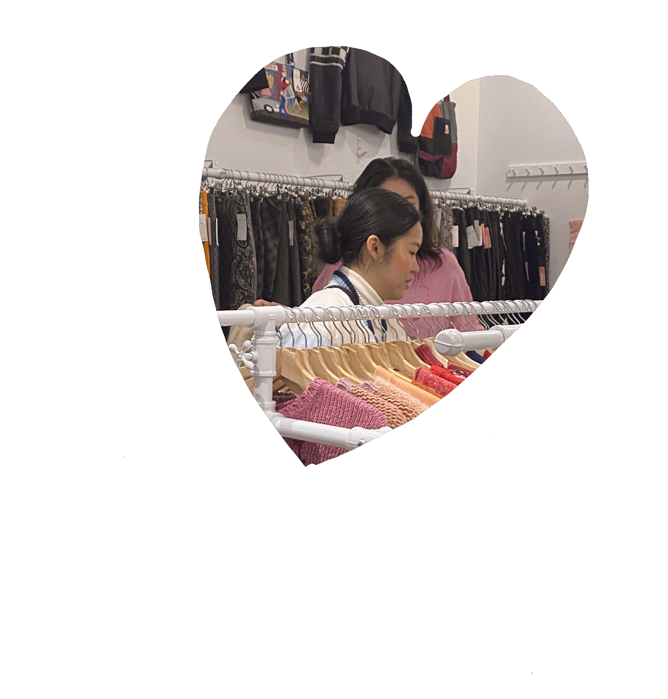
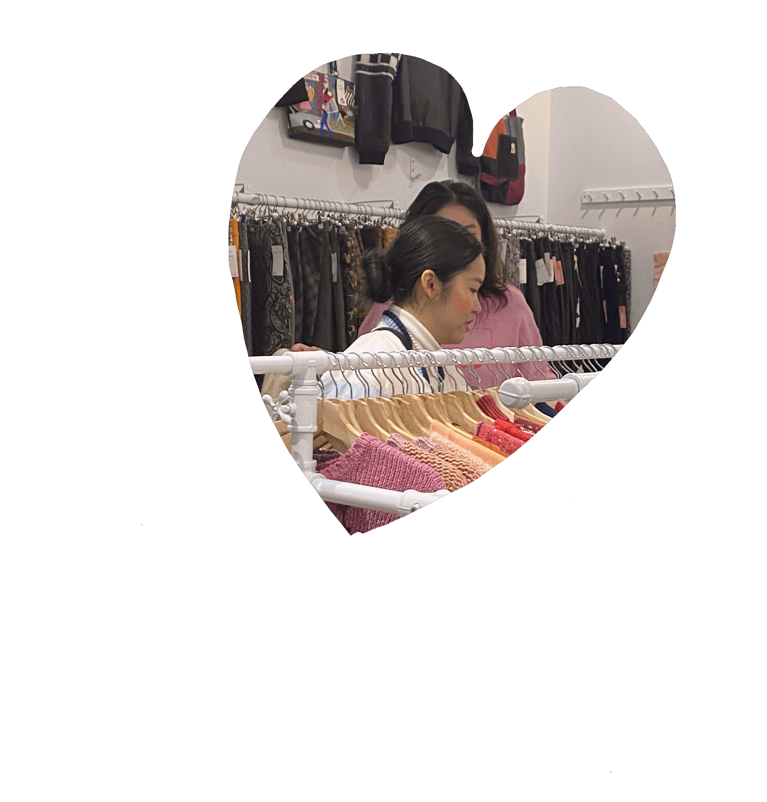

1. Pick your outfit and finish your makeup! take your time, it's going to be a long day.
2. Visit nippon cha, a matcha cafe filled with matcha drinks and desserts imported from Japan. They make it right in front of you, all fresh!
3. Grab your sonny angel at red pearl, a gift store filled with unique items!
4. thrifting!! crossroads bedford and awoke vintage has some cute selections! Visit Mother of Junk for some cool "junk" items!
5. Williamsburg Thai Cuisine makes the best affordable thai food in the city, made by the sweetest owners. Try their bubble tea and Pad See Ew!
6. Finally, visit Martha's Country Bakery at night for some desserts! Their music and the atmosphere is so lovely with their homemade baked goods! I love the banana pie!


 
